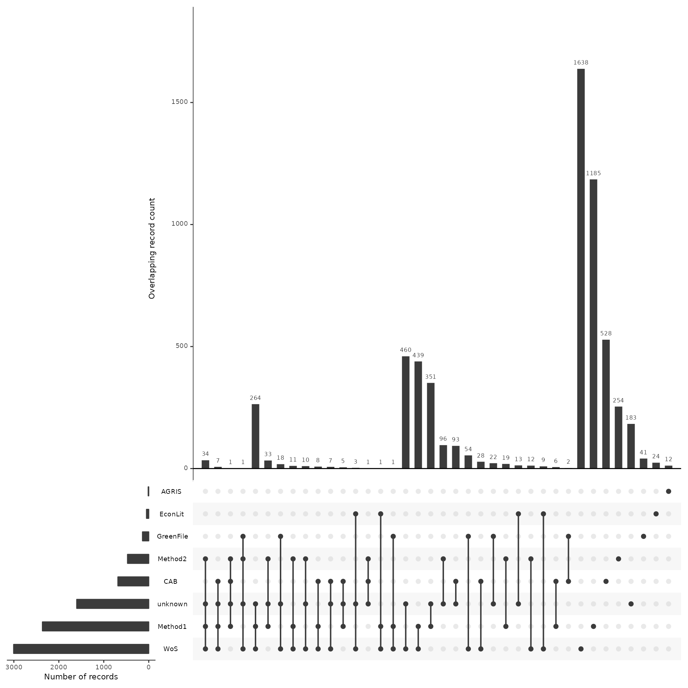
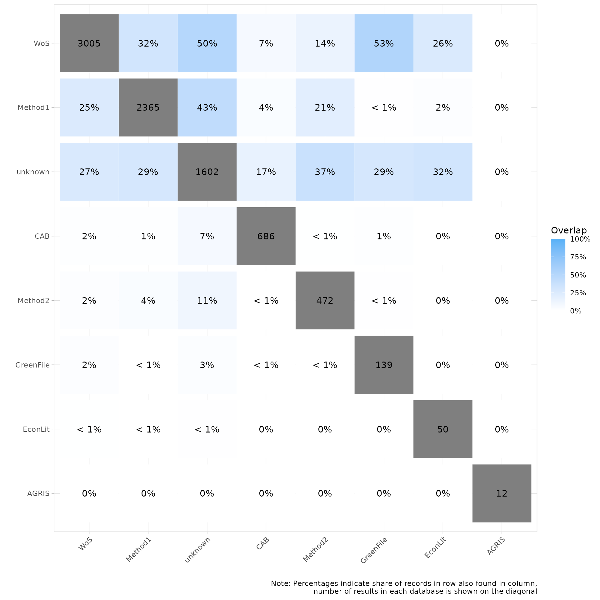
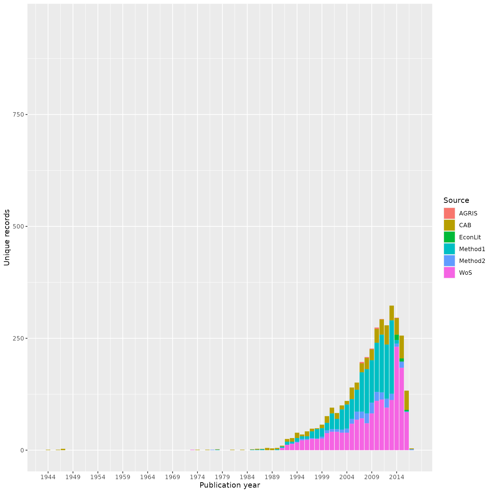
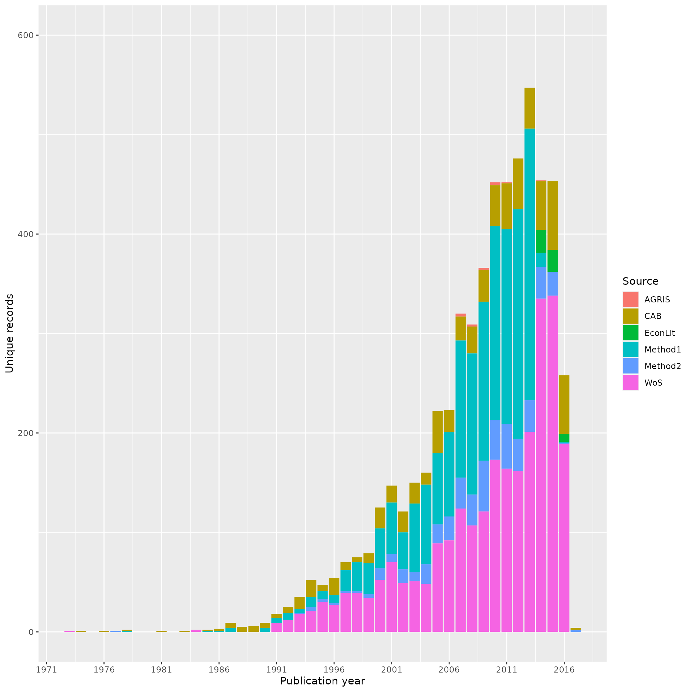

About this vignette
This vignette is a bit of a sandbox for the experimentation with plots! Currently it is using the working example data (same data used in the “Source Analysis Across Screening Phases” vignette). This Vignette includes plots that are already built into CiteSource along with plots that we are exploring.
If you have any questions, feedback, ideas, etc. about this vignette or others be sure to check out our discussion board on github! https://github.com/ESHackathon/CiteSource/discussions/100
2. Import Reference Files and Custom Metadata
#Import citation files from a folder
citation_files <- list.files(path = file.path("../vignettes/working_example_data"), pattern = "\\.ris", full.names = TRUE)
#Print citation_files to double check the order in which R imported our files.
citation_files
#> [1] "../vignettes/working_example_data/AGRIS.ris"
#> [2] "../vignettes/working_example_data/CAB.ris"
#> [3] "../vignettes/working_example_data/EconLit.ris"
#> [4] "../vignettes/working_example_data/Final.ris"
#> [5] "../vignettes/working_example_data/GreenFile.ris"
#> [6] "../vignettes/working_example_data/McK.ris"
#> [7] "../vignettes/working_example_data/RM.ris"
#> [8] "../vignettes/working_example_data/TiAb.ris"
#> [9] "../vignettes/working_example_data/WoS_early.ris"
#> [10] "../vignettes/working_example_data/WoS_later.ris"3. Tagging Sources & Deduplication
For this vignette we’ll be using the same sources from the “Source Analysis Across Screening Phases” vignette as it’s one of the larger sets of citations.
# Set the path to the directory containing the citation files
file_path <- "../vignettes/working_example_data/"
metadata_tbl <- tibble::tribble(
~files, ~cite_sources, ~cite_labels,
"AGRIS.ris", "AGRIS", "search",
"CAB.ris", "CAB", "search",
"EconLit.ris", "EconLit", "search",
"Final.ris", NA, "Final",
"GreenFile.ris", "GreenFile", "search",
"McK.ris", "Method1", "search",
"RM.ris", "Method2", "search",
"TiAb.ris", NA, "Screened",
"WoS_early.ris", "WoS", "search",
"WoS_later.ris", "WoS", "search"
) %>%
dplyr::mutate(files = paste0(file_path, files))
citations <- read_citations(metadata = metadata_tbl)
#> Import completed - with the following details:
#> file cite_source cite_string cite_label citations
#> 1 AGRIS.ris AGRIS <NA> search 12
#> 2 CAB.ris CAB <NA> search 687
#> 3 EconLit.ris EconLit <NA> search 50
#> 4 Final.ris <NA> <NA> Final 242
#> 5 GreenFile.ris GreenFile <NA> search 139
#> 6 McK.ris Method1 <NA> search 2656
#> 7 RM.ris Method2 <NA> search 530
#> 8 TiAb.ris <NA> <NA> Screened 1573
#> 9 WoS_early.ris WoS <NA> search 2550
#> 10 WoS_later.ris WoS <NA> search 736
# Deduplication & Identifying Crossover Records
unique_citations <- dedup_citations(citations)
#> formatting data...
#> identifying potential duplicates...
#> identified duplicates!
#> flagging potential pairs for manual dedup...
#> 9175 citations loaded...
#> 3301 duplicate citations removed...
#> 5874 unique citations remaining!
#> formatting data...
#> identifying potential duplicates...
#> identified duplicates!
#> merging citations...
# Count number of unique and non-unique citations from different sources and labels
n_unique <- count_unique(unique_citations)
# Create dataframe indicating occurrence of records across sources
source_comparison <- compare_sources(unique_citations, comp_type = "sources")New table to show internal deduplication
library(gt)
library(gtExtras)
# Function to count occurrences of each database
count_sources <- function(df, db_colname) {
db_counts <- df %>%
dplyr::pull(!!sym(db_colname)) %>%
strsplit(", ") %>%
lapply(unique) %>%
unlist() %>%
trimws() %>%
table() %>%
as.data.frame()
colnames(db_counts) <- c("Source", "count")
return(db_counts)
}
# Calculate S-SUR count for each database
s_sur_count <- count_sources(unique_citations, "cite_source")
colnames(s_sur_count) <- c("Source", "S-SUR")
# Count the citations in the uploaded .ris data and remove blank rows
initial_citations_count <- count_sources(citations, "cite_source")
colnames(initial_citations_count) <- c("Source", "Records Imported")
# Combine the counts into one table
citation_counts <- dplyr::left_join(initial_citations_count, s_sur_count, by = "Source")
# Convert the necessary columns to numeric
citation_counts$`S-SUR` <- as.numeric(citation_counts$`S-SUR`)
citation_counts$`Records Imported` <- as.numeric(citation_counts$`Records Imported`)
# Convert the Source column to character
citation_counts$Source <- as.character(citation_counts$Source)
# Calculate totals
totals <- c("Total",
sum(citation_counts$`Records Imported`, na.rm = TRUE),
sum(citation_counts$`S-SUR`, na.rm = TRUE)
)
# Add the total row
citation_counts <- rbind(citation_counts, totals)
# Generate the final table
citation_counts %>%
gt(rowname_col = "Source") %>%
tab_header(title = "Citation Counts") %>%
cols_label(
`Records Imported` = "Records Imported¹",
`S-SUR` = "S-SUR²"
) %>%
tab_source_note(
source_note = md(c(
"¹ Number of records imported from each database.",
"² Number of source specific unique records"
))
)%>%
gt_theme_538()| Citation Counts | ||
| Records Imported¹ | S-SUR² | |
|---|---|---|
| AGRIS | 12 | 12 |
| CAB | 687 | 686 |
| EconLit | 50 | 50 |
| GreenFile | 139 | 139 |
| Method1 | 2656 | 2365 |
| Method2 | 530 | 472 |
| WoS | 3286 | 3005 |
| Total | 7360 | 6729 |
| ¹ Number of records imported from each database. | ||
| ² Number of source specific unique records | ||
#Updated Search Summary Table
library(gt)
library(gtExtras)
# Function to count occurrences of each database
count_sources <- function(df, db_colname) {
db_counts <- df %>%
dplyr::pull(!!sym(db_colname)) %>%
strsplit(", ") %>%
lapply(unique) %>%
unlist() %>%
trimws() %>%
table() %>%
as.data.frame()
colnames(db_counts) <- c("Source", "count")
return(db_counts)
}
# Calculate S-SUR count for each database
s_sur_count <- count_sources(unique_citations, "cite_source")
colnames(s_sur_count) <- c("Source", "S-SUR")
# Count the citations in the uploaded .ris data and remove blank rows
initial_citations_count <- count_sources(citations, "cite_source")
colnames(initial_citations_count) <- c("Source", "Records Imported")
# Count the citations in the n_unique data, remove blank rows, and exclude rows without 'search' in cite_label
n_unique_citations_count <- n_unique %>%
dplyr::filter(cite_label == "search") %>%
dplyr::group_by(cite_source) %>%
dplyr::summarise(`Unique records` = sum(unique)) %>%
dplyr::filter(cite_source != "") %>%
dplyr::arrange(cite_source) %>%
dplyr::rename(Source = cite_source)
# Combine the counts into one table
citation_counts <- dplyr::left_join(initial_citations_count, s_sur_count, by = "Source") %>%
dplyr::left_join(n_unique_citations_count, by = "Source")
# Add the "Non-unique Records" column directly
citation_counts <- citation_counts %>%
dplyr::mutate(`Non-unique Records` = `S-SUR` - `Unique records`)
# Convert the necessary columns to numeric
citation_counts$`S-SUR` <- as.numeric(citation_counts$`S-SUR`)
citation_counts$`Records Imported` <- as.numeric(citation_counts$`Records Imported`)
citation_counts$`Unique records` <- as.numeric(citation_counts$`Unique records`)
citation_counts$`Non-unique Records` <- as.numeric(citation_counts$`Non-unique Records`)
# Add the calculations
citation_counts <- citation_counts %>%
dplyr::mutate(`Source Contribution %` = `S-SUR` / sum(`S-SUR`, na.rm = TRUE),
`Source Unique Contribution %` = `Unique records` / sum(`Unique records`, na.rm = TRUE),
`Source Unique %` = `Unique records` / `S-SUR`)
citation_counts <- citation_counts %>%
dplyr::mutate(
`Source Contribution %` = as.numeric(`Source Contribution %`),
`Source Unique Contribution %` = as.numeric(`Source Unique Contribution %`),
`Source Unique %` = as.numeric(`Source Unique %`)
) %>%
dplyr::mutate(
`Source Contribution %` = scales::percent(`Source Contribution %`, accuracy = 0.1),
`Source Unique Contribution %` = scales::percent(`Source Unique Contribution %`, accuracy = 0.1),
`Source Unique %` = scales::percent(`Source Unique %`, accuracy = 0.1)
)
# Calculate totals
totals <- c("Total",
sum(citation_counts$`Records Imported`, na.rm = TRUE),
sum(citation_counts$`S-SUR`, na.rm = TRUE),
sum(citation_counts$`Unique records`, na.rm = TRUE),
sum(citation_counts$`Non-unique Records`, na.rm = TRUE),
"-", "-", "-")
# Add the total row
citation_counts <- rbind(citation_counts, totals)
citation_counts %>%
gt(rowname_col = "Source") %>%
tab_header(title = "Citation Counts") %>%
cols_label(
`Records Imported` = "Records Imported¹",
`S-SUR` = "S-SUR²",
`Unique records` = "Unique records³",
`Non-unique Records` = "Non-unique Records⁴",
`Source Contribution %` = "Source Contribution %⁵",
`Source Unique Contribution %` = "Source Unique Contribution %⁶",
`Source Unique %` = "Source Unique %⁷"
) %>%
tab_source_note(
source_note = md(c(
"¹ Number of records imported from each database.",
"² Total number of records in S-SUR for each database.",
"³ Total number of unique records for each database.",
"⁴ Difference between S-SUR and unique records for each database.",
"⁵ Percentage contribution of each database to the total S-SUR.",
"⁶ Percentage of unique records from each database to the total unique records.",
"⁷ Percentage of unique records out of the S-SUR from each database."
))
)%>%
gt_theme_538()| Citation Counts | |||||||
| Records Imported¹ | S-SUR² | Unique records³ | Non-unique Records⁴ | Source Contribution %⁵ | Source Unique Contribution %⁶ | Source Unique %⁷ | |
|---|---|---|---|---|---|---|---|
| AGRIS | 12 | 12 | 12 | 0 | 0.2% | 0.3% | 100.0% |
| CAB | 687 | 686 | 528 | 158 | 10.2% | 14.3% | 77.0% |
| EconLit | 50 | 50 | 24 | 26 | 0.7% | 0.7% | 48.0% |
| GreenFile | 139 | 139 | 41 | 98 | 2.1% | 1.1% | 29.5% |
| Method1 | 2656 | 2365 | 1185 | 1180 | 35.1% | 32.2% | 50.1% |
| Method2 | 530 | 472 | 254 | 218 | 7.0% | 6.9% | 53.8% |
| WoS | 3286 | 3005 | 1638 | 1367 | 44.7% | 44.5% | 54.5% |
| Total | 7360 | 6729 | 3682 | 3047 | - | - | - |
| ¹ Number of records imported from each database. | |||||||
| ² Total number of records in S-SUR for each database. | |||||||
| ³ Total number of unique records for each database. | |||||||
| ⁴ Difference between S-SUR and unique records for each database. | |||||||
| ⁵ Percentage contribution of each database to the total S-SUR. | |||||||
| ⁶ Percentage of unique records from each database to the total unique records. | |||||||
| ⁷ Percentage of unique records out of the S-SUR from each database. | |||||||
# Function to count occurrences of each source in the 'Screened' and 'Final' phases
count_source_phase <- function(df) {
df <- df %>%
tidyr::separate_rows(cite_source, sep = ",") %>%
tidyr::separate_rows(cite_label, sep = ",")
df <- df %>%
dplyr::mutate(cite_source = stringr::str_trim(cite_source),
cite_label = stringr::str_trim(cite_label))
df <- df %>%
dplyr::filter(cite_source != "unknown")
df <- df %>%
dplyr::mutate(screened = ifelse(cite_label == "Screened", 1, 0),
final = ifelse(cite_label == "Final", 1, 0)) %>%
dplyr::group_by(cite_source) %>%
dplyr::summarise(screened = sum(screened),
final = sum(final),
.groups = "drop")
df <- dplyr::rename(df, Source = cite_source)
return(df)
}
source_phase <- count_source_phase(unique_citations)
# Function to count occurrences of each database
count_sources <- function(df, db_colname) {
db_counts <- df %>%
dplyr::pull(rlang::sym(db_colname)) %>%
strsplit(", ") %>%
lapply(unique) %>%
unlist() %>%
trimws() %>%
table() %>%
as.data.frame()
colnames(db_counts) <- c("Source", "count")
return(db_counts)
}
s_sur_count <- count_sources(unique_citations, "cite_source")
colnames(s_sur_count) <- c("Source", "S-SUR")
s_sur_count$`S-SUR` <- as.numeric(s_sur_count$`S-SUR`)
s_sur_count$Source <- as.character(s_sur_count$Source)
# Combine the results
combined_counts <- dplyr::left_join(s_sur_count, source_phase, by = "Source")
# Calculate totals
totals <- c("Total",
sum(combined_counts$`S-SUR`, na.rm = TRUE),
sum(combined_counts$screened, na.rm = TRUE),
sum(combined_counts$final, na.rm = TRUE))
# Add the total row
combined_counts <- rbind(combined_counts, totals)
# Generate the final table
combined_counts %>%
gt::gt(rowname_col = "Source") %>%
gt::tab_header(title = "Citation Counts") %>%
gt::cols_label(
`S-SUR` = "S-SUR¹",
screened = "Screened Included²",
final = "Final Included³"
) %>%
gt::tab_source_note(
source_note = gt::md(c(
"¹ Number of source specific unique records",
"² Records included after title/abstract screening",
"³ Records included after full text screening"
))
)%>%
gt_theme_538()| Citation Counts | |||
| S-SUR¹ | Screened Included² | Final Included³ | |
|---|---|---|---|
| AGRIS | 12 | 0 | 0 |
| CAB | 686 | 114 | 4 |
| EconLit | 50 | 16 | 3 |
| GreenFile | 139 | 41 | 4 |
| Method1 | 2365 | 868 | 162 |
| Method2 | 472 | 196 | 67 |
| unknown | 1602 | NA | NA |
| WoS | 3005 | 867 | 123 |
| Total | 8331 | 2102 | 363 |
| ¹ Number of source specific unique records | |||
| ² Records included after title/abstract screening | |||
| ³ Records included after full text screening | |||
library(dplyr)
library(tidyr)
library(stringr)
library(gt)
library(gtExtras)
# Function to count occurrences of each source in the 'Screened' and 'Final' phases
count_source_phase <- function(df) {
df <- df %>%
tidyr::separate_rows(cite_source, sep = ",") %>%
tidyr::separate_rows(cite_label, sep = ",")
df <- df %>%
dplyr::mutate(cite_source = stringr::str_trim(cite_source),
cite_label = stringr::str_trim(cite_label))
df <- df %>%
dplyr::filter(cite_source != "unknown")
df <- df %>%
dplyr::mutate(screened = ifelse(cite_label == "Screened", 1, 0),
final = ifelse(cite_label == "Final", 1, 0)) %>%
dplyr::group_by(cite_source) %>%
dplyr::summarise(screened = sum(screened),
final = sum(final),
.groups = "drop")
df <- dplyr::rename(df, Source = cite_source)
return(df)
}
source_phase <- count_source_phase(unique_citations)
# Function to count occurrences of each database
count_sources <- function(df, db_colname) {
db_counts <- df %>%
dplyr::pull(rlang::sym(db_colname)) %>%
strsplit(", ") %>%
lapply(unique) %>%
unlist() %>%
trimws() %>%
table() %>%
as.data.frame()
colnames(db_counts) <- c("Source", "count")
return(db_counts)
}
s_sur_count <- count_sources(unique_citations, "cite_source")
colnames(s_sur_count) <- c("Source", "S-SUR")
s_sur_count$`S-SUR` <- as.numeric(s_sur_count$`S-SUR`)
s_sur_count$Source <- as.character(s_sur_count$Source)
# Combine the results
combined_counts <- dplyr::left_join(s_sur_count, source_phase, by = "Source")
# Replace NA values with 0
combined_counts[is.na(combined_counts)] <- 0
# Calculate Precision
combined_counts <- combined_counts %>%
dplyr::mutate(Precision = ifelse(`S-SUR` != 0, round((final / `S-SUR`) * 100, 2), 0)) # Multiply by 100 and round
# Calculate Recall manually in a loop
total_final <- sum(combined_counts$final)
for(i in 1:nrow(combined_counts)) {
combined_counts$Recall[i] <- round((combined_counts$final[i] / total_final) * 100, 2) # Multiply by 100 and round
}
# Calculate totals
totals <- c("Total",
sum(combined_counts$`S-SUR`, na.rm = TRUE),
sum(combined_counts$screened, na.rm = TRUE),
sum(combined_counts$final, na.rm = TRUE),
"-", # Precision total doesn't make sense
"-") # Recall total doesn't make sense
# Add the total row
combined_counts <- rbind(combined_counts, totals)
# Generate the final table
combined_counts %>%
gt::gt(rowname_col = "Source") %>%
gt::tab_header(title = "Citation Counts") %>%
gt::cols_label(
`S-SUR` = "S-SUR¹",
screened = "Screened Included²",
final = "Final Included³",
Precision = "Precision⁴",
Recall = "Sensitivity/Recall⁵"
) %>%
gt::tab_source_note(
source_note = gt::md(c(
"¹ Number of source specific unique records",
"² Records included after title/abstract screening",
"³ Records included after full text screening",
"⁴ Precision = Final Included / S-SUR",
"⁵ Sensitivity/Recall = Final Included / Total Final Included"
))
)%>%
gtExtras::gt_theme_538()| Citation Counts | |||||
| S-SUR¹ | Screened Included² | Final Included³ | Precision⁴ | Sensitivity/Recall⁵ | |
|---|---|---|---|---|---|
| AGRIS | 12 | 0 | 0 | 0 | 0 |
| CAB | 686 | 114 | 4 | 0.58 | 1.1 |
| EconLit | 50 | 16 | 3 | 6 | 0.83 |
| GreenFile | 139 | 41 | 4 | 2.88 | 1.1 |
| Method1 | 2365 | 868 | 162 | 6.85 | 44.63 |
| Method2 | 472 | 196 | 67 | 14.19 | 18.46 |
| unknown | 1602 | 0 | 0 | 0 | 0 |
| WoS | 3005 | 867 | 123 | 4.09 | 33.88 |
| Total | 8331 | 2102 | 363 | - | - |
| ¹ Number of source specific unique records | |||||
| ² Records included after title/abstract screening | |||||
| ³ Records included after full text screening | |||||
| ⁴ Precision = Final Included / S-SUR | |||||
| ⁵ Sensitivity/Recall = Final Included / Total Final Included | |||||
Pull unique records from each source
#Get unique records from each source and add bibliographic data
unique_AGRIS <- n_unique %>%
dplyr::filter(cite_source=="AGRIS", unique == TRUE) %>%
inner_join(unique_citations, by = "duplicate_id")
unique_CAB <- n_unique %>%
dplyr::filter(cite_source=="CAB", unique == TRUE) %>%
inner_join(unique_citations, by = "duplicate_id")
unique_EconLit <- n_unique %>%
dplyr::filter(cite_source=="EconLit", unique == TRUE) %>%
inner_join(unique_citations, by = "duplicate_id")
unique_WoS <- n_unique %>%
dplyr::filter(cite_source=="WoS", unique == TRUE) %>%
inner_join(unique_citations, by = "duplicate_id")
unique_Method1 <- n_unique %>%
dplyr::filter(cite_source=="Method1", unique == TRUE) %>%
inner_join(unique_citations, by = "duplicate_id")
unique_Method2 <- n_unique %>%
dplyr::filter(cite_source=="Method2", unique == TRUE) %>%
inner_join(unique_citations, by = "duplicate_id")
all_unique <- bind_rows(unique_AGRIS, unique_CAB, unique_EconLit,
unique_WoS, unique_Method1, unique_Method2)4.PLOTS
Heatmaps
my_heatmap <- plot_source_overlap_heatmap(source_comparison)
my_heatmap
# Plot overlap as a heatmap matrix as percentage
my_heatmap_percent <- plot_source_overlap_heatmap(source_comparison, plot_type = "percentages")
my_heatmap_percent
Upset plots
# Citation duplication across multitiple resources
my_upset_plot <- plot_source_overlap_upset(source_comparison, decreasing = c(TRUE, TRUE))
#> Plotting a large number of groups. Consider reducing nset or sub-setting the data.
my_upset_plotUnique/Crossover Bar Plots
# Unique vs. Duplicate sources across Search/TiAb Screening/Final Inclusion
my_contributions <- plot_contributions(n_unique,
center = TRUE,
bar_order = c("search", "Screened", "Final")
)
my_contributions
Publication year bar plots
# Filter the "all_unique" dataset to only include records with a valid year
# Create a new column to represent the year
# Group the data by source and year and calculate the count of records for each group
year_data <- all_unique %>%
dplyr::mutate(year = as.numeric(year)) %>% # Convert "year" column to numeric format
dplyr::filter(!is.na(year) & year != "") %>% # Remove rows where "year" is missing or empty
group_by(cite_source.x, year) %>% # Group data by "cite_source.x" and "year"
summarise(count = n(), .groups = "drop") # Calculate the number of records in each group
# Create a bar plot to visualize the filtered and grouped data
unique_yearplot <- ggplot(year_data, aes(x=year, y=count, fill = cite_source.x)) +
geom_bar(position = "stack", stat = "identity") + # Create a stacked bar plot with actual count values
scale_x_continuous(breaks = seq(min(year_data$year), max(year_data$year), by = 5)) + # Set x-axis breaks to every 5 years
coord_cartesian(ylim = c(0, 950)) + # Set y-axis limits to ensure all bars are visible
xlab("Publication year") + # Add x-axis label
ylab("Unique records") + # Add y-axis label
labs(fill = "Source") # Add legend label for the fill color
unique_yearplot
interactive publication year bar plot
# Creating an interactive plot with plotly
library(plotly)
#>
#> Attaching package: 'plotly'
#> The following object is masked from 'package:ggplot2':
#>
#> last_plot
#> The following object is masked from 'package:stats':
#>
#> filter
#> The following object is masked from 'package:graphics':
#>
#> layout
unique_year_funplot <- ggplotly(unique_yearplot, tooltip = c("cite_source.x", "year", "count"), dynamicTicks = TRUE)
unique_year_funplotSankey plot idea
#further work needed to integrate Unique_citations into this plot, as this is very manual, but great as an example as to how the three custom fields can be visualized. In this case Strings/Sources/Timeline (Inclusion/Exclusion)
library(networkD3)
# Define nodes
nodes <- data.frame(
name = c("AG 1", "AG 2", "AGRIS",
"CAB 1", "CAB 2", "CAB",
"EL 1", "EL 2", "EconLit",
"WoS 1", "WoS 2", "WoS",
"Method 1", "Method 2",
"TI/AB Included", "Final Included", "Excluded", "NA"),
id = 0:17
)
# Define links
links <- data.frame(
source = c(0, 1, 3, 4, 6, 7, 9, 10),
target = c(2, 2, 5, 5, 8, 8, 11, 11),
value = c(100, 150, 100, 150, 100, 150, 100, 100)
)
# Add links for the second column nodes (including Method 1 and Method 2) flowing into TI/AB Included and Excluded
links <- rbind(links, data.frame(
source = c(2, 5, 8, 11, 2, 5, 8, 11, 12, 12, 13, 13),
target = c(14, 14, 14, 14, 16, 16, 16, 16, 14, 16, 14, 16),
value = c(50, 50, 50, 50, 200, 200, 200, 150, 50, 50, 50, 50)
))
# Add links for TI/AB Included flowing into Final Included and Excluded
links <- rbind(links, data.frame(
source = c(14),
target = c(15),
value = c(100)
))
links <- rbind(links, data.frame(
source = c(14),
target = c(16),
value = c(200)
))
nodes <- rbind(nodes, data.frame(
name = c("", ""),
id = 17:18
))
links <- rbind(links, data.frame(
source = c(17, 17),
target = c(12, 13),
value = c(NA, NA)
))
# Create Sankey diagram
sankey<-sankeyNetwork(
Links = links,
Nodes = nodes,
Source = "source",
Target = "target",
Value = "value",
NodeID = "name",
units = "",
fontSize = 12,
nodeWidth = 20,
iterations = 0
)
sankey5. TABLES
Unique Journal Count per Source
library(gt)
#Exploritory Plot - The following table and functions are not yet integrated into CiteSource
# Create a function to group by journal, count unique citations, and arrange in descending order
# This function takes a data frame as input, and returns a processed data frame
process_journals <- function(data) {
data %>%
group_by(journal) %>% # Group the data by journal
summarise(count = n()) %>%
dplyr::filter(journal != "") %>% # Filter out any blank journal titles
arrange(desc(count)) # Arrange the journals in descending order of count
}
# Process Journal Titles
AGRIS_journals <- process_journals(unique_AGRIS)
CAB_journals <- process_journals(unique_CAB)
EconLit_journals <- process_journals(unique_EconLit)
WoS_journals <- process_journals(unique_WoS)
Method1_journals <- process_journals(unique_Method1)
Method2_journals <- process_journals(unique_Method2)
# Create a function to display a gt table
# This function takes a data frame and a caption as input, and returns a gt table
display_gt_table <- function(data, caption) {
data %>%
gt() %>%
tab_header(title = caption) %>% # Set the table title to the provided caption
cols_label(journal = "Journal", count = "Unique Citations") %>% # Set column labels
tab_options(
table.width = px(600),
table.font.size = px(12),
heading.title.font.size = px(16),
heading.subtitle.font.size = px(14)
) # Set table styling options
}Top 10 journals for each source
display_gt_table(CAB_journals[1:10, ], "Top 10 Journals by Unique Citations CAB")| Top 10 Journals by Unique Citations CAB | |
| Journal | Unique Citations |
|---|---|
| Journal of Ethnobiology and Ethnomedicine | 14 |
| Science of the Total Environment | 7 |
| Water Practice & Technology | 7 |
| Ethnobotany Research and Applications | 6 |
| International Journal of Forest Usufructs Management | 6 |
| Journal of Agricultural Safety and Health | 6 |
| Water Science and Technology | 6 |
| Indian Forester | 5 |
| Indian Journal of Traditional Knowledge | 5 |
| Journal of Ethnopharmacology | 5 |
display_gt_table(EconLit_journals[1:10, ], "Top 10 Journals by Unique Citations EconLit")| Top 10 Journals by Unique Citations EconLit | |
| Journal | Unique Citations |
|---|---|
| Annals of Dunarea de Jos University of Galati: Fascicle 1: Economics and Applied Informatics | 1 |
| Applied Economics and Finance | 1 |
| Ecological Economics | 1 |
| Environmental and Resource Economics | 1 |
| Estudios Sociales | 1 |
| Foreign Trade Review | 1 |
| Forum for Development Studies | 1 |
| Journal of Developing Areas | 1 |
| Journal of Forest Economics | 1 |
| Journal of the Chinese Statistical Association | 1 |
display_gt_table(WoS_journals[1:10, ], "Top 10 Journals by Unique Citations WoS")| Top 10 Journals by Unique Citations WoS | |
| Journal | Unique Citations |
|---|---|
| Forest Policy and Economics | 83 |
| Forest Ecology and Management | 51 |
| Land Use Policy | 46 |
| International Forestry Review | 32 |
| Ecological Economics | 30 |
| Journal of Forestry | 30 |
| Forestry Chronicle | 29 |
| Small-Scale Forestry | 26 |
| Agroforestry Systems | 24 |
| Forests | 24 |
display_gt_table(Method1_journals[1:10, ], "Top 10 Journals by Unique Citations Method 1")| Top 10 Journals by Unique Citations Method 1 | |
| Journal | Unique Citations |
|---|---|
| Forests Trees and Livelihoods | 29 |
| Journal of Sustainable Forestry | 24 |
| Environmental Management | 22 |
| Ecology and Society | 18 |
| Environmental Conservation | 18 |
| Unasylva | 18 |
| International Forestry Review | 17 |
| Biodiversity and Conservation | 16 |
| Biological Conservation | 13 |
| Human Ecology | 13 |
display_gt_table(Method2_journals[1:10, ], "Top 10 Journals by Unique Citations Method 2")| Top 10 Journals by Unique Citations Method 2 | |
| Journal | Unique Citations |
|---|---|
| PLOS ONE | 8 |
| Biological Conservation | 4 |
| International Journal of Environment and Sustainable Development | 4 |
| Land Economics | 4 |
| Conservation Biology | 3 |
| Conservation Letters | 3 |
| Ecological Economics | 3 |
| Environmental Conservation | 3 |
| Food Policy | 3 |
| Global Environmental Change | 3 |
Citation Summary Table
# Citation summary table
citation_summary_table(unique_citations, screening_label = c("Screened", "Final"))| Sources | Records | Contribution | Sensitivity | Precision | |
|---|---|---|---|---|---|
| total | unique | unique | |||
| search | |||||
| WoS | 3,005 | 1,638 | 28.78% | 52.80% | — |
| Method1 | 2,365 | 1,185 | 20.82% | 41.56% | — |
| unknown | 1,419 | 0 | 0.00% | 24.93% | — |
| CAB | 686 | 528 | 33.59% | 12.05% | — |
| Method2 | 472 | 254 | 16.16% | 8.29% | — |
| GreenFile | 139 | 41 | 16.94% | 2.44% | — |
| EconLit | 50 | 24 | 9.92% | 0.88% | — |
| AGRIS | 12 | 12 | 4.96% | 0.21% | — |
| Total1 | 5,691 | 3,682 | 64.70% | — | — |
| Screened | |||||
| unknown | 1,572 | 153 | 2.69% | 100.00% | 110.78% |
| WoS | 804 | 0 | 0.00% | 51.15% | 26.76% |
| Method1 | 695 | 0 | 0.00% | 44.21% | 29.39% |
| Method2 | 176 | 0 | 0.00% | 11.20% | 37.29% |
| CAB | 114 | 0 | 0.00% | 7.25% | 16.62% |
| GreenFile | 41 | 0 | 0.00% | 2.61% | 29.50% |
| EconLit | 16 | 0 | 0.00% | 1.02% | 32.00% |
| Total1 | 1,572 | 153 | 9.73% | — | 27.62% |
| Final | |||||
| unknown | 242 | 36 | 2.29% | 100.00% | 17.05% |
| WoS | 115 | 0 | 0.00% | 47.52% | 3.83% |
| Method1 | 113 | 0 | 0.00% | 46.69% | 4.78% |
| Method2 | 51 | 0 | 0.00% | 21.07% | 10.81% |
| CAB | 4 | 0 | 0.00% | 1.65% | 0.58% |
| GreenFile | 4 | 0 | 0.00% | 1.65% | 2.88% |
| EconLit | 3 | 0 | 0.00% | 1.24% | 6.00% |
| Total1 | 242 | 36 | 14.88% | — | 4.25% |
Included fields:
|
|||||
| 1 After deduplication | |||||
Citation Record Table
# Citation Record Table
unique_citations %>%
dplyr::filter(stringr::str_detect(cite_label, "Final")) %>%
record_level_table(return = "DT")